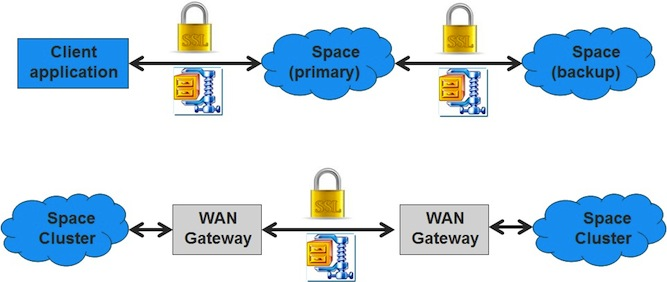

For more information, see the [%=General.ProductNameXAP%] Over a Firewall page.
Stream-based filter - for a protocol like ZIP. This type of filter does not support a handshake phase.
Block-based filter - for encryption network filters. These filters do support a handshake phase.
The way to load and enable the communication filter, is by setting the system property com.gs.lrmi.filter.factory. The value should be the communication filter factory class name.
For example, to use an SSL communication filter, run
-Dcom.gs.lrmi.filter.factory=com.gigaspaces.lrmi.nio.filters.SSLFilterFactory
Since some types of communication filters are not symmetric regarding the client and server, the class SSLFilterFactory has 2 methods: one to create the communication filter for the client side, and the other for the server side.
public IOFilter createClientFilter() throws Exception;
public IOFilter createServerFilter() throws Exception;
If the communication filter needs its own parameters, it can acquire them by directly reading system properties. For example, the supplied SSLFilter needs to get the keystore file, and the password to this file.
It uses the following system properties to get them:
-Dcom.gs.lrmi.filter.security.keystore=keystore.ks
-Dcom.gs.lrmi.filter.security.password=password
The key store file is loaded from somewhere in the classpath.
The provided SSLFilter uses key store type JKS, with key management method SunX509.
Refer to the API Reference guide for more details about the reference classes:
Code snippet of the space server.
public class SSLServer {
public static void main(String [] args) throws Exception{
EmbeddedSpaceConfigurer configurer = new EmbeddedSpaceConfigurer("SSLSpace").
lookupGroups("ssl_example_group");
GigaSpace gigaSpace = new GigaSpaceConfigurer(configurer).gigaSpace();
}
}
Code snippet of the space client.
public class SSLClient {
public static void main(String [] args) throws Exception{
UrlSpaceConfigurer configurer =
new UrlSpaceConfigurer("jini://localhost/*/SSLSpace).
lookupGroups("ssl_example_group");
GigaSpace remoteSpace = new GigaSpaceConfigurer(configurer).gigaSpace();
AnEntry entry = new AnEntry();
entry.key = "first";
entry.payload = "first value";
remoteSpace.write(entry);
AnEntry value = remoteSpace.read(new AnEntry());
System.out.println(value.payload);
}
public static class AnEntry implements Entry{
private static final long serialVersionUID = 1L;
public AnEntry() {
}
public String key;
public String payload;
}
}
As you can see, until now there is nothing special in the code – it is the same code as if the SSL was not used. However, when you wish to run this code with SSL encryption, you should run it with the following system properties (both server and client), and have the keystore anywhere in the classpath (both server and client).
-Dcom.gs.lrmi.filter.factory=com.gigaspaces.lrmi.nio.filters.SSLFilterFactory
-Dcom.gs.lrmi.filter.security.keystore=keystore.ks
-Dcom.gs.lrmi.filter.security.password=password
Regarding com.gigaspaces.lrmi.nio.filters.SSLFilterFactory - It is possible to implement your own filter and indicate the class name here. See information regarding TLS 1.3 below.
You can find an example of using SSLFilterFactory with self signed certs here.
In your production environment, you should have the SSLFilterFactory password (or any other secured user access information) protected by passing its value at the deploy time into the pu.xml (where the actual property using a variable) or at the start-up time as an argument to a wrapper script starting the GigaSpaces agent and not place such secured data on file.
Alternatively if you do not need authentication and just wish to encrypt the data you can omit the key store and the password and the server will generate the SSL keys on the fly.
-Dcom.gs.lrmi.filter.factory=com.gigaspaces.lrmi.nio.filters.SSLFilterFactory
Support for TLS 1.3 was added in Java 11. This is also true for Java 8 version 8u261 +.
TLS 1.3 is not directly compatible with previous TLS versions, and is currently not supported in the com.gs.lrmi.filter.security.protocol system property, the default is to choose the latest TLS available. In Java 11 this is TLS 1.3 and it will fail. To prevent this from happening, explicitly specify the requested TLS version, such as “TLSv1.2”. For example, instead of: -Dcom.gs.lrmi.filter.security.protocol=TLS, specify -Dcom.gs.lrmi.filter.security.protocol=TLSv1.2.
The indication that SSL is used is the message:
Communication Filters Information:
CommunicationFilterFactory: com.gigaspaces.lrmi.nio.filters.SSLFilterFactory